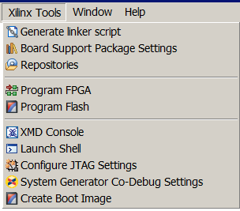

The Xilinx Tools menu contains the following items. Note: the Hardware Platform Specification menu item has been moved to File > New > Xilinx Hardware Platform Specification.
| Name | Function |
|---|---|
| Generate Linker Script | Configure and generate the linker script. |
| Board Support Package Settings | Customize the Board Support Package created for application development within SDK, including libraries and drivers, or for external tools. |
| Repositories | Add, change, or remove software repositories. |
| System Generator Co-Debug Settings | Specify settings for use in co-debug sessions with the System Generator tool. |
| Launch Bash Shell | Launch the Command shell. |
| Program Flash | Program a Flash memory on the target board. The programming is done via the JTAG cable interface. |
| Configure JTAG Settings | Specify the JTAG cable to use for communication and JTAG Device Chain configuration of the target board. |
| Program FPGA | Program the FPGA connected to the JTAG cable interface. (Keyboard shortcut: Ctrl+Shift+D) |
| XMD Console | Open the XMD Console. |
Copyright © 1995-2013 Xilinx, Inc. All rights reserved.